auxjad.reposition_dynamics¶
-
auxjad.reposition_dynamics(container: abjad.core.Container.Container, *, allow_hairpins_under_rests: bool = False, check_hairpin_trends: bool = True, remove_repeated_dynamics: bool = True, allow_rests_with_dynamics_after_hairpins: bool = True)¶ Mutates an input container (of type
abjad.Containeror child class) in place and has no return value; this function shifts all dynamics from rests to the next pitched leaves. It will also adjust hairpins if necessary.- Example:
This function will shift dynamics under rests to the next pitched leaf.
>>> staff = abjad.Staff(r"c'1\p d'2 r2\f r1 e'1") >>> abjad.f(staff) \new Staff { c'1 \p d'2 r2 \f r1 e'1 }
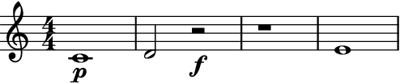>>> staff = abjad.Staff(r"c'1\p d'2 r2\f r1 e'1") >>> auxjad.reposition_dynamics(staff) >>> abjad.f(staff) \new Staff { c'1 \p d'2 r2 r1 e'1 \f }
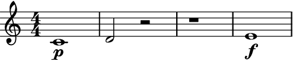- Example:
If the next pitched leaf already contain a dynamic, this function will simply remove the dynamic under the rest.
>>> staff = abjad.Staff(r"c'1\p d'2 r2\f r1\mf e'1\pp") >>> abjad.f(staff) \new Staff { c'1 \p d'2 r2 \f r1 \mf e'1 \pp }
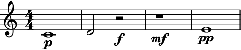>>> staff = abjad.Staff(r"c'1\p d'2 r2\f r1\mf e'1\pp") >>> auxjad.reposition_dynamics(staff) >>> abjad.f(staff) \new Staff { c'1 \p d'2 r2 r1 e'1 \pp }
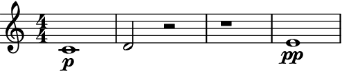- Example:
By default indentical repeated dynamics are omitted.
>>> staff = abjad.Staff(r"c'1\p d'1 r1\f e'1\p") >>> auxjad.reposition_dynamics(staff) >>> abjad.f(staff) \new Staff { c'1 \p d'1 r1 e'1 }
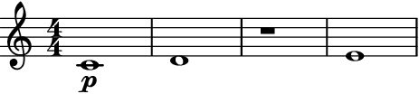Set the optional keyword argument
remove_repeated_dynamicstoFalseto disable this behaviour.>>> staff = abjad.Staff(r"c'1\p d'1 r1\f e'1\p") >>> auxjad.reposition_dynamics(staff, remove_repeated_dynamics=False) >>> abjad.f(staff) \new Staff { c'1 \p d'1 r1 e'1 \p }
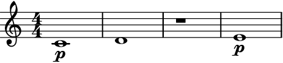- Example:
This function will shorten hairpins until rests by default
>>> staff = abjad.Staff(r"c'1\p\< d'2 r2 r1\f e'1") >>> abjad.f(staff) \new Staff { c'1 \p \< d'2 r2 r1 \f e'1 }
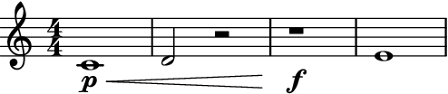>>> staff = abjad.Staff(r"c'1\p\< d'2 r2\f r1 e'1") >>> auxjad.reposition_dynamics(staff) >>> abjad.f(staff) \new Staff { c'1 \p \< d'2 r2 \! r1 e'1 \f }
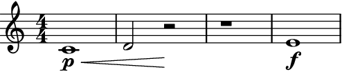Set the optional keyword argument
allow_hairpins_under_reststoTrueto allow hairpins to extend cross rests.>>> staff = abjad.Staff(r"c'1\p\< d'2 r2\f r1 e'1") >>> auxjad.reposition_dynamics(staff, allow_hairpins_under_rests=True) >>> abjad.f(staff) \new Staff { c'1 \p \< d'2 r2 r1 e'1 \f }
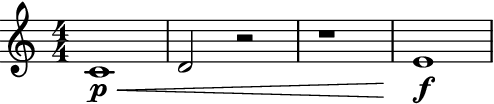- Example:
Notice that if a hairpin leads to a rest with dynamic, that one is not removed.
>>> staff = abjad.Staff(r"c'1\p\< d'2 r2\f r1 e'1") >>> auxjad.reposition_dynamics(staff) >>> abjad.f(staff) \new Staff { c'1 \p \< d'2 r2 \f r1 e'1 }
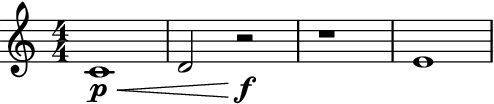Set the argument
allow_rests_with_dynamics_after_hairpinstoFalseto disable this behaviour.>>> staff = abjad.Staff(r"c'1\p\< d'2 r2\f r1 e'1") >>> auxjad.reposition_dynamics( ... staff, ... allow_rests_with_dynamics_after_hairpins=False, ... ) >>> abjad.f(staff) \new Staff { c'1 \p \< d'2 r2 \! r1 e'1 \f }

- Example:
This function will remove any hairpins connecting dynamics that grow in the opposite direction to the hairpin’s trend, such as a diminuendo hairpin from piano to forte.
>>> staff = abjad.Staff(r"c'1\p\> d'1\f\> e'1\p") >>> auxjad.reposition_dynamics(staff) >>> abjad.f(staff) \new Staff { c'1 \p d'1 \f \> e'1 \p }
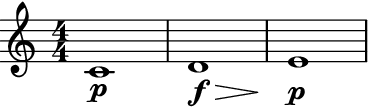This behaviour can be disabled by setting the argument
check_hairpin_trendstoFalse.>>> staff = abjad.Staff(r"c'1\p\> d'1\f\> e'1\p") >>> auxjad.reposition_dynamics(staff, check_hairpin_trends=False) >>> abjad.f(staff) \new Staff { c'1 \p \> d'1 \f \> e'1 \p }
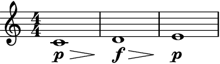
Note
The behaviour described above is only applicable when a hairpin ends on a dynamic. Using the hairpin terminator
\!before a dynamic change will not cause a hairpin to be removed as it is not considered to be connecting dynamics of the opposite trend.>>> staff = abjad.Staff(r"c'1\p\> d'1\! e'1\f\> f'1\p") >>> auxjad.reposition_dynamics(staff) >>> abjad.f(staff) \new Staff { c'1 \p \> d'1 \! e'1 \f \> f'1 \p }
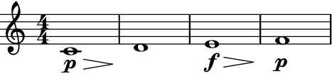- Example:
This function can handle multiple types of hairpins as well as niente dynamics.
>>> staff = abjad.Staff(r"c'1 d'1 e'1 r1\mf r1\ff f'1 r1 g'1") >>> abjad.attach(abjad.Dynamic('niente', hide=True), staff[0]) >>> abjad.attach(abjad.Dynamic('niente', hide=True), staff[7]) >>> abjad.attach(abjad.StartHairpin('o<'), staff[0]) >>> abjad.attach(abjad.StartHairpin('>o'), staff[4]) >>> abjad.attach(abjad.StopHairpin(), staff[7]) >>> auxjad.reposition_dynamics(staff) >>> abjad.f(staff) \new Staff { c'1 - \tweak circled-tip ##t \< d'1 e'1 r1 \mf r1 f'1 \ff - \tweak circled-tip ##t \> r1 \! g'1 }
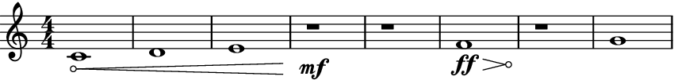>>> staff = abjad.Staff( ... r"c'1\p d'1\f\> e'1\ff\< r1\fff f'1\p\> g'1\ppp") >>> abjad.attach(abjad.StartHairpin('--'), staff[0]) >>> auxjad.reposition_dynamics(staff) >>> abjad.f(staff) \new Staff { c'1 \p - \tweak stencil #constante-hairpin \< d'1 \f e'1 \ff \< r1 \fff f'1 \p \> g'1 \ppp }
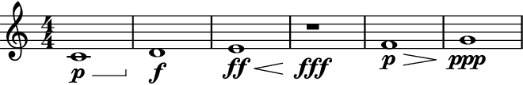- Example:
Multi-measure rests are also supported.
>>> staff = abjad.Staff(r"c'1\p R1\f d'1") >>> abjad.f(staff) \new Staff { c'1 \p R1 \f d'1 }
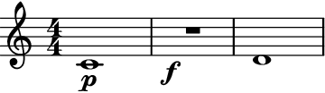>>> staff = abjad.Staff(r"c'1\p R1\f d'1") >>> auxjad.reposition_dynamics(staff) >>> abjad.f(staff) \new Staff { c'1 \p R1 d'1 \f }
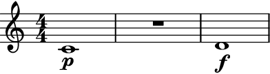